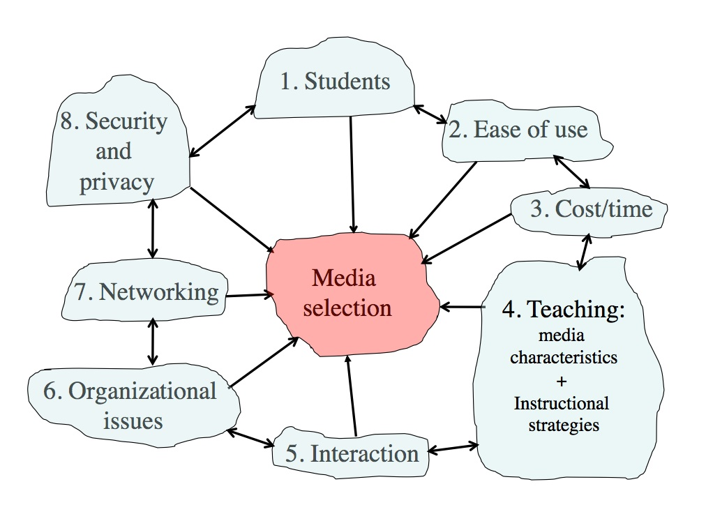
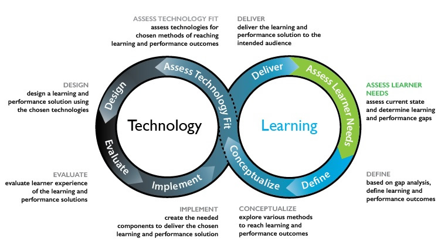

9.10 Decidindo



Se acompanhou a leitura dos últimos três capítulos, poderá sentir alguma complexidade face a todas as variáveis a ter em conta no momento de selecionar mídias. Trata-se de uma questão complexa, mas a leitura das seções anteriores posiciona-o em condições favoráveis para formular decisões bem fundamentadas. Passo a explicar.
9.10.1 Tomada de decisões dedutiva versus indutiva
Há vários anos, quando desenvolvi inicialmente o modelo ACTIONS, fui abordado por um colega que trabalhava numa grande multinacional de informática (numa época em que a introdução de dados nos computadores se realizava através de cartões perfurados). Conversamos sobre o seu projeto letivo. Eis o resumo desse diálogo:
Pierre: Tony, estou entusiasmado com o teu modelo. Poderíamos aplicá-lo em todas as escolas e universidades do mundo.
Tony: A sério? De que forma o farias?
Pierre: Tu propões um conjunto de perguntas que os professores têm de formular para cada critério. O leque de respostas possíveis a estas perguntas será provavelmente limitado. Poderíamos mapear essas respostas ou recolhê-las junto de uma amostra representativa de professores. Atribuiríamos depois pontuações a cada tecnologia de acordo com as respostas dadas. Assim, quando um professor necessitasse de escolher uma tecnologia, responderia às perguntas e, de acordo com as suas opções, o computador calcularia e indicaria a escolha ideal. Voilà!
Tony: Considero que isso não irá funcionar, Pierre.
Pierre: Mas por que não?
Tony: Não tenho a certeza absoluta, mas é uma intuição.
Pierre: Uma intuição? O meu inglês não é perfeito. O que queres dizer com intuição (gut feeling)?
Tony: Pierre, o teu inglês é excelente. A minha reação não é puramente lógica, mas deixa-me tentar formular os motivos pelos quais considero que essa abordagem não funcionará. Em primeiro lugar, duvido que exista um número restrito de respostas possíveis para cada questão; e mesmo que existisse, o modelo não funcionaria.
Pierre: Por que razão não funcionaria?
Tony: Porque não vejo como um professor pontuaria a sua resposta a cada pergunta e, além disso, verificar-se-á uma interação entre as respostas dadas aos diferentes critérios. Não é a mera soma das respostas individuais que determinará qual tecnologia utilizar, mas sim de que forma essas respostas se articulam. Sob a perspectiva computacional, as combinações possíveis seriam imensas, e não vejo clareza em mapear quais seriam as combinações significativas para a escolha de cada tecnologia.
Pierre: Mas dispomos de computadores potentes e rápidos, e podemos simplificar o processo através de algoritmos.
Tony: Sim, mas tens de ter em conta o contexto no qual os professores efetuam as escolhas de mídias. Eles tomam decisões sobre mídias constantemente, numa diversidade de contextos. Não é prático sentarem-se em frente a um computador, responderem a um questionário extenso e aguardarem pela recomendação do sistema.
Pierre: Mas não gostarias de testar? Conseguiríamos superar estes problemas.
Tony: Pierre, agradeço a tua sugestão, mas a minha intuição diz-me que não funcionará, e não pretendo desperdiçar o teu tempo nem o meu nesse percurso.
Pierre: O que dirás aos professores, então? Como tomarão as suas decisões?
Tony: Dir-lhes-ei que utilizem o seu instinto, Pierre — depois de terem lido e aplicado o modelo ACTIONS.
Esta constitui uma história verídica, embora as palavras exatas possam ter registado variações. O fato de dispormos hoje de sistemas de inteligência artificial com capacidade técnica para o fazer não altera a minha perspectiva, dado que este cenário ilustra um conflito entre o raciocínio dedutivo (Pierre) e o raciocínio indutivo (Tony).
9.10.1.1 Raciocínio dedutivo
No raciocínio dedutivo, adotar-se-ia a sugestão de Pierre: iniciar o processo sem concepções prévias sobre a tecnologia a utilizar, responder a cada uma das perguntas propostas no modelo SECTIONS, listar as tecnologias que respondem a cada resposta, analisar qual se adequa aos critérios e pontuar cada ferramenta numa escala recomendada. Procurar-se-ia depois agregar as respostas, eventualmente recorrendo a uma matriz complexa, para formular a decisão final.
O principal obstáculo prende-se com o fato de que cada professor e cada contexto de aprendizagem são únicos em cada tomada de decisão. Os docentes experientes trazem consigo um manancial de conhecimentos — conceitos sobre metodologias de ensino eficazes, caraterização dos estudantes, exigências dos conteúdos e as competências que pretendem desenvolver no momento —, e, acima de tudo, o contexto de utilização da mídia (domicílio, sala de aula, etc.), antes de tomarem a sua decisão.
9.10.1.2 Raciocínio indutivo
A minha solução difere da de Pierre, assentando numa abordagem de pendor mais indutivo para a tomada de decisões. O critério central da lógica indutiva define-se nos seguintes termos:
À medida que a evidência se acumula, o grau em que o conjunto de dados de suporte valida uma hipótese, medido pela lógica, deve tender a indicar que as hipóteses falsas são provavelmente falsas e que as hipóteses verdadeiras são provavelmente verdadeiras.
Stanford Encyclopedia of Philosophy
Na seleção de mídias, inicia-se habitualmente o processo com algumas tecnologias em mente (hipóteses — ou a sua intuição). O percurso que sugiro consiste em começar por essa intuição inicial sobre as ferramentas a utilizar, mantendo a mente aberta, e percorrer as perguntas propostas em cada um dos critérios SECTIONS (recolhendo dados favoráveis ou contrários à intuição inicial). Inicia-se depois a recolha de evidências para sustentar ou rejeitar a utilização de uma determinada mídia. No final do processo, disporá de uma perspectiva probabilística sobre qual combinação de mídias funcionará melhor e porquê. Não se trata de um exercício a realizar de forma exaustiva ou consciente em todas as ocasiões. Após realizar esta reflexão algumas vezes, a escolha de mídias em novos cenários tornar-se-á célere e intuitiva, na medida em que o cérebro armazena a informação anterior e dispõe de um referencial (o modelo SECTIONS) para estruturar os novos dados e integrá-los no conhecimento consolidado.
9.10.1.3 Tomada de decisões rápida
Concluída a leitura deste capítulo, você dispõe de um conjunto de perguntas para reflexão (compiladas no Apêndice 1 para consulta facilitada). Encontra-se na mesma posição do rei que solicitou ao alquimista a fórmula para criar ouro. "É simples", referiu o alquimista, "desde que não pense em elefantes". Tendo lido os três capítulos dedicados às mídias, os "elefantes" encontram-se agora na sua mente, sendo complexo ignorá-los. O cérebro constitui um instrumento para decisões intuitivas ou indutivas desta natureza. O segredo assenta em reter a informação de modo a aceder-lhe no momento necessário, processo que o cérebro realiza rapidamente. As decisões podem não ser sempre perfeitas, mas revelar-se-ão mais consistentes do que na ausência desta reflexão prévia. Na prática quotidiana, soluções rápidas e funcionais sobrepõem-se habitualmente a decisões perfeitas mas tardias.
9.10.2 Enquadrar a seleção de mídias no desenvolvimento de disciplinas
A seleção de mídias não ocorre de forma isolada. Há outros fatores a ponderar no design letivo. Especificamente, qualquer opção sobre o uso de tecnologia na educação incorpora pressupostos sobre o processo de aprendizagem. Analisamos anteriormente de que forma as diferentes posições epistemológicas e teorias da aprendizagem condicionam o design letivo, influenciando de igual modo a escolha de mídias pelo professor. A seleção de mídias constitui uma etapa do design pedagógico global, devendo enquadrar-se nessa estrutura.
Na Figura 9.10.2 abaixo, a adaptação do modelo ADDIE desenvolvida por Hibbitts e Travin (ver Capítulo 4, Seção 3) apresenta o seguinte modelo de desenvolvimento de aprendizagem e tecnologia, integrando as etapas de planejamento de disciplinas:



O modelo SECTIONS constitui uma estratégia aplicável para avaliar a integração da tecnologia neste percurso de desenvolvimento letivo. Quer adote o modelo ADDIE, quer opte por abordagens de design ágil, a escolha de mídias será influenciada pelas restantes variáveis do planejamento letivo, acrescentando informação à reflexão. Este processo articular-se-á com o conhecimento da matéria de ensino, as concepções e valores sobre o ensino e a aprendizagem, bem como com dimensões de ordem afetiva e emocional.
Tudo isto reforça a pertinência da abordagem indutiva que sugiro para a tomada de decisões. Confie na capacidade do seu cérebro — este revela-se mais eficaz do que um computador para este tipo de decisões complexas. Torna-se contudo essencial dispor da informação necessária. Deste modo, se omitiu a leitura de alguma seção deste capítulo ou dos anteriores sobre as mídias, poderá revelar-se útil revisitá-los.
Atividade 9.10: Escolhendo mídias e tecnologias
- Selecione a mesma disciplina escolhida na Atividade 9.1.
- Consulte o Apêndice 1 e verifique a quantas perguntas consegue responder, recorrendo aos conteúdos do Capítulo 9 e às respostas dadas às atividades ao longo do capítulo, se necessário.
- Concluída a resposta às perguntas do Apêndice 1, quais mídias ou tecnologias pondera utilizar atualmente? De que forma esta seleção difere da sua lista inicial? Se registou alterações, quais os motivos?
Não é disponibilizado feedback para esta atividade, dado que cada contexto letivo apresentará especificidades próprias.
Capítulo 9 Principais Ideias-Chave
1. A seleção de mídias e tecnologias constitui um processo complexo, envolvendo um conjunto alargado de variáveis interdependentes.
2. Não existe presentemente uma teoria ou processo de aceitação generalizada para a seleção de mídias. O modelo SECTIONS, contudo, disponibiliza um conjunto de critérios ou perguntas cujas conclusões podem apoiar o professor no momento de tomar decisões sobre as mídias ou tecnologias a utilizar.
3. Face à diversidade de fatores que influenciam a seleção e utilização de mídias, uma abordagem indutiva ou intuitiva para a tomada de decisões, fundamentada numa análise cuidada de todos os critérios do referencial SECTIONS, constitui uma via prática de abordar a escolha de mídias e tecnologias no ensino e na aprendizagem.
4. Contudo, a seleção de mídias deve ser integrada no âmbito mais amplo do planejamento (design) da disciplina.